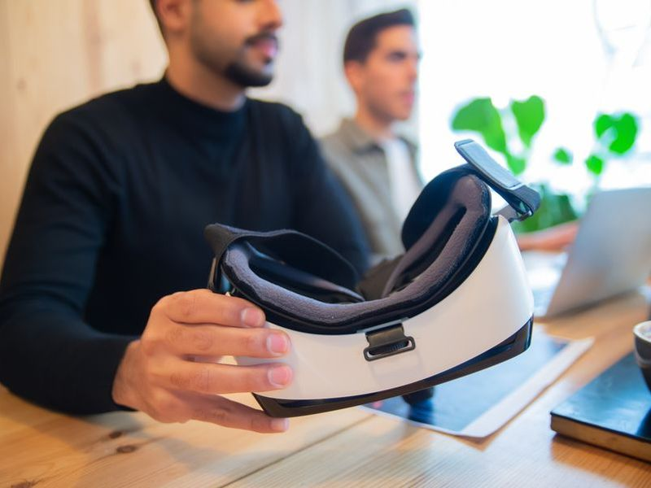
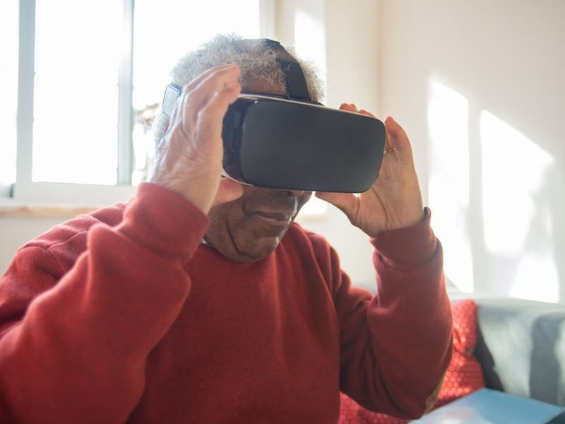
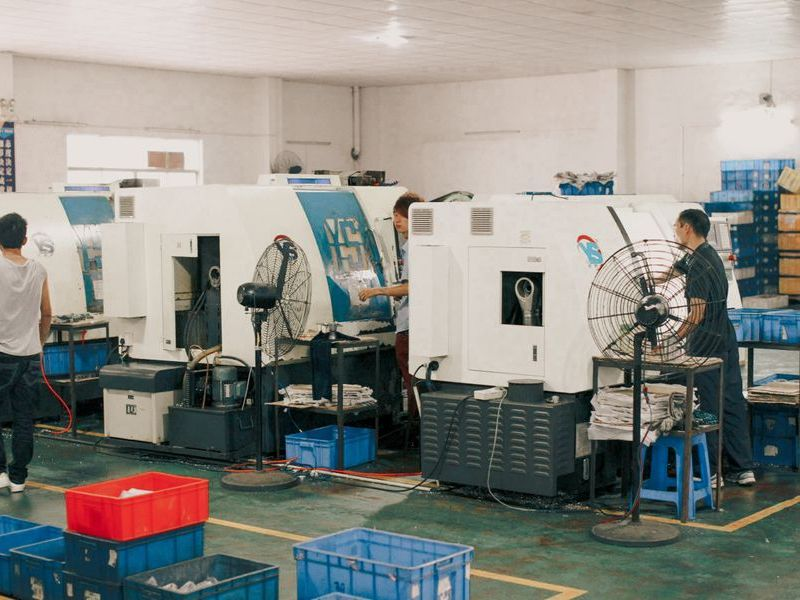

1AA real object moves
Lifting the bottle moves a real object, so a live window opens. Ordinary hand gestures don’t.
A live window opens only where something real moves or where you ask, and your own hand movements don’t trigger it.
In VR you are blind to the real room until you take the headset off. The Guardian watches the room for you and opens a small live window only where something moves, or where you ask.
A fast detector watches the room. When a real object is displaced, and not just your hand moving, a window opens around it and fades 2 seconds after the motion stops. A vision-language model adds a short line about what is going on.
Lifting the bottle moves a real object, so a live window opens. Ordinary hand gestures don’t.
Typing on the real keyboard: Qwen3-VL reads desk, laptop, monitor, keyboard, action: typing.
Speak a question and the window opens on that object for at least 3 seconds, while the computer answers out loud.
Where is the keyboard?Window opens on the keyboard
Where is the mouse?Window opens on the mouse
Where is the water bottle?Window opens on the bottle
YOLO11n, Qwen3-VL and Whisper are too large for the headset’s mobile chip, so they run on a laptop linked by USB. They only decide where and when to open a window.
The pixels inside the window come straight from the PICO’s live passthrough, so what you see is real time, not an AI image.
Finds desk objects in 27–31 ms on the laptop CPU.
Adds a short description of the scene and answers harder questions.
Hears your question; ends after about 0.3 s of silence.
Directions this prototype opens up. None of them are tested yet.
Notice a fall, a spill or a person approaching.

Keyboard, mouse or phone appear only when needed.

Ask about nearby objects without leaving VR.

Expose real controls at critical steps.
Photos: Pexels